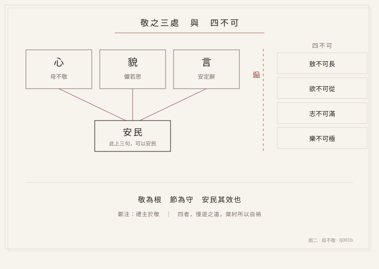

曲礼上 · 一·一、一·二 · 第 1 课
《礼记》开卷第一句，不叙仪节、不列名物，先立三个字：敬、俨、定。
说什么事：说礼的根。前面没有铺垫，上来就是一句引文——《曲礼》曰。记者不说「礼者如何」，而说「《曲礼》曰」：先有一部旧《曲礼》，此处引它作全篇的纲。这是记体的写法：不自作经，先引故书。
落在哪一层：义。不是仪节，不是制度，是礼之所以为礼的那个东西。郑玄注此句只四字：「礼主于敬。」全篇四十九篇、千余条仪节，根都扎在这四个字上。
为何编在此位：因为不可后置。礼最难的不是记住多少条，是记住这些条目背后有一个「敬」在。若把这一句放在第二十篇，读者已经先学会了动作，再来听理由，理由就成了补注。放在第一句，是先把尺立起来。
本课含两节：一·一「毋不敬，俨若思，安定辞。安民哉！」；一·二「敖不可长，欲不可从，志不可满，乐不可极。」前者立正，后者防偏。合为一课，因为一正一反本是一件事的两面。
【经】《曲禮》曰：「毋不敬，儼若思，安定辭。」安民哉！
【经】敖不可長，欲不可從，志不可滿，樂不可極。
毋不敬 毋，禁止之辞。不说「敬」，而说「毋不敬」：从反面下刀，把一切不敬的路先堵死。郑注：「礼主于敬。」四字无主语，也无宾语——礼本身就以敬为主，不是人以敬行礼。
儼若思 郑注：「儼，矜莊貌。人之坐思，貌必儼然。」俨是外貌，若思是取譬：人真正在想一件事的时候，脸自然收起来，不必做作。此处说的是那种状态，不是那种表情。
安定辭 郑注：「審言語也。《易》曰：『言語者，君子之樞機。』」安，安顿；定，不轻发。审而后言，言才安顿得住。郑玄不释「安」为安民之安，而释为言语之审——这是他把三句都收归「礼主于敬」的用心：心敬、貌敬、言敬，三处一贯。
安民哉 郑注：「此上三句，可以安民。說《曲禮》者，美之云耳。」郑把这句读作记者对前三句的赞美：这三句若能行，民自安。他特意加「说《曲礼》者，美之云耳」，是防人把「安民」读成第四条目、读成治国之术。
敖不可長 敖，通行作傲。长，生长。傲气不是一日长成，是日日添一分，添到旁人不敢言。
欲不可從 从，通行作纵放纵。此字最易误读为「禁欲」。看下文三句同列，可知所禁的是「纵」，不是「有」。
志不可滿 满则不受言。一个人自觉志已满，此后听到的都只是噪音。
樂不可極 极，尽也。郑注四句总按： 「四者，慢遊之道，桀、紂所以自禍。」慢游，是骄逸无节；四字——长、从、满、极——都不是「有」，都是「过」。
句读一异 「安定辭」有读作「安，定辭」者（安而后定其辞），与郑注「审言语」为一事之两说，义不相反；此处从郑，作「安定·辞」，释为「安顿其辞使定」。
《曲礼》说：没有一处可以不敬；仪貌庄重，像正在深思；言辞安顿而确定。这样，百姓就安了。
傲气不可让它生长，欲望不可任它放纵，志气不可让它自满，享乐不可推到极处。
三句立敬之三处——心、貌、言；四句堵敬之四漏——长、从、满、极。前者是礼之根，后者是礼之守。
第一层 心 「毋不敬」不是说每件事都要郑重，是说没有一件事可以不必郑重。敬在这里不是情绪，是位置：把自己放在事的下手处，而不是事的上头。郑玄一句「礼主于敬」，把礼从「做什么」拉回「以什么心做」。
第二层 貌与言 「俨若思」是貌，「安定辞」是言。二者都是心的外见，不是另立两条规矩。郑注引《易》「言语者，君子之枢机」：枢是门轴，机是弩牙——话说出去，门就开了、箭就发了，收不回来。所以「审」在「言」之前，不是修辞，是次序。
第三层 安民 郑玄把「安民哉」读作赞美，不读作条目，这一读极要紧：安民不是第四件要做的事，是前三件做到了自然的结果。若把安民当成目标，前三句就成了手段，手段可以打折；若前三句是根，安民只是根上长出来的东西。
与今日何干 今日最缺的不是礼貌，是「审言」。一句话打出去的成本，比两千年前低得多，收回的成本却高得多。郑玄说的枢机，今天仍然是枢机。
| 左 | 右 |
|---|---|
| 毋不敬：没有一件事可以不必郑重 | 敬是常，不是紧；松处也在礼中 |
| 俨若思：真在想事，貌自然收 | 装出来的庄重，第一句就破 |
| 安定辞：言是枢机，审而后发 | 话少不等于审，该透的要透 |
| 四不可：长、从、满、极皆是过 | 禁的是极，不是乐；节即是礼 |
画一卷开的竹简或一册旧书置于案上，简首一行墨字「毋不敬」；案侧一盏灯，光只照到简首，后半卷尚在暗处。不画人。整幅静，不添器物。赭色只用于简绳与灯焰两处。
